Part Splitter 0.8.9INV-008: lateral versus profundidade
INV008_folga0.png
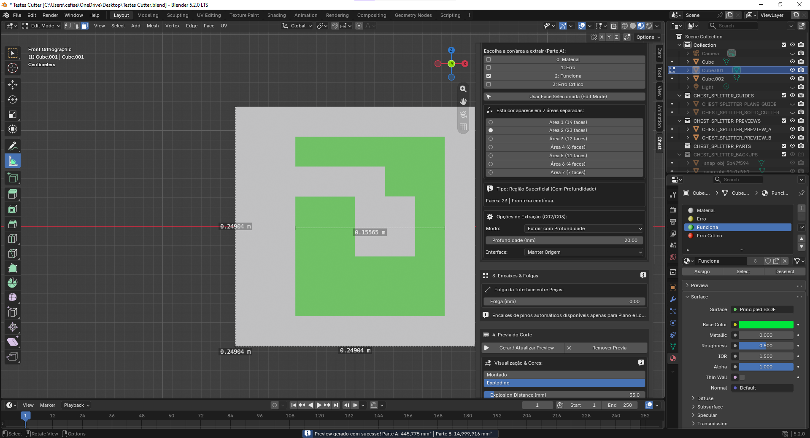
INV-008: lateral versus profundidade
INV008_folga5.png
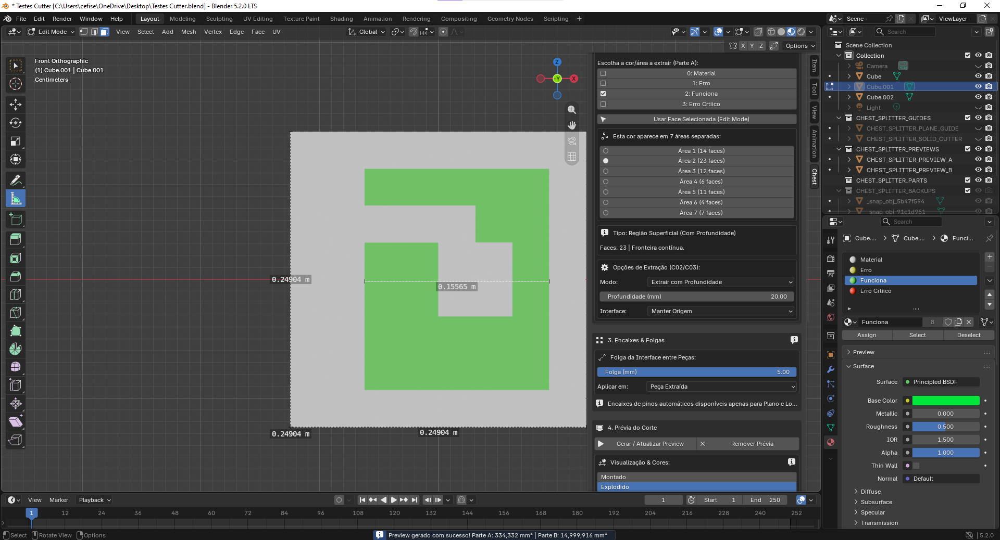
INV-009: quina e volume interno
INV009_01.png
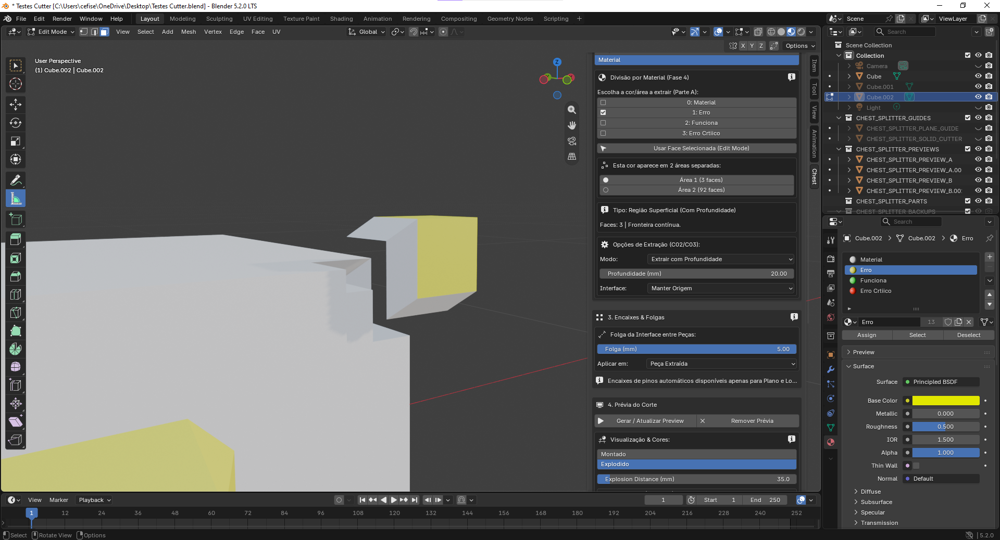
INV-009: quina e volume interno
INV009_02.png
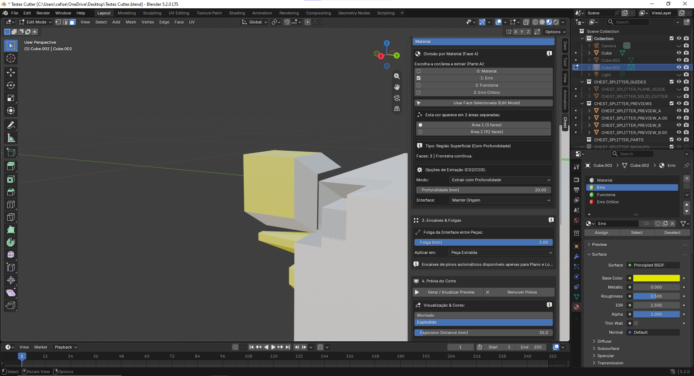
INV-009: quina e volume interno
INV009_03.png
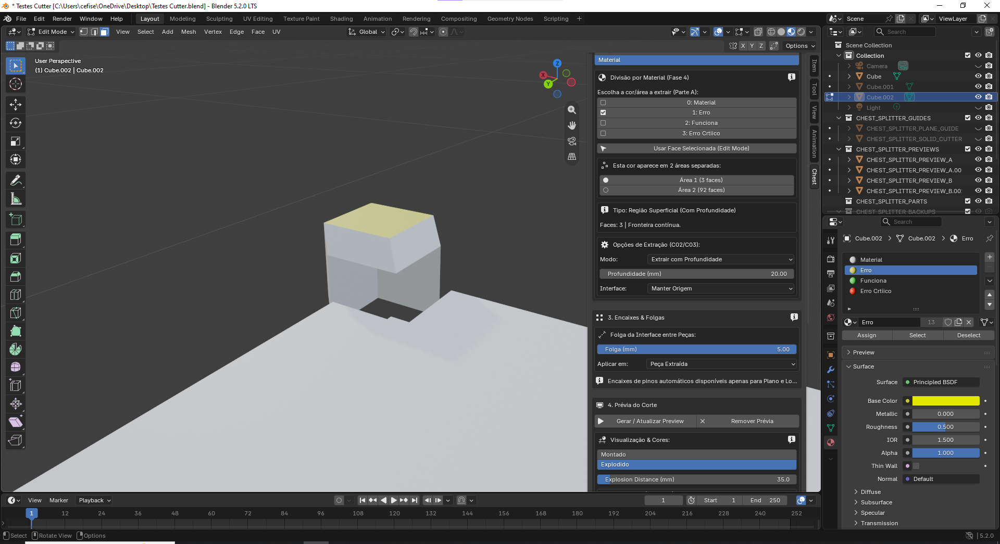
INV-009: quina e volume interno
INV009_04.png
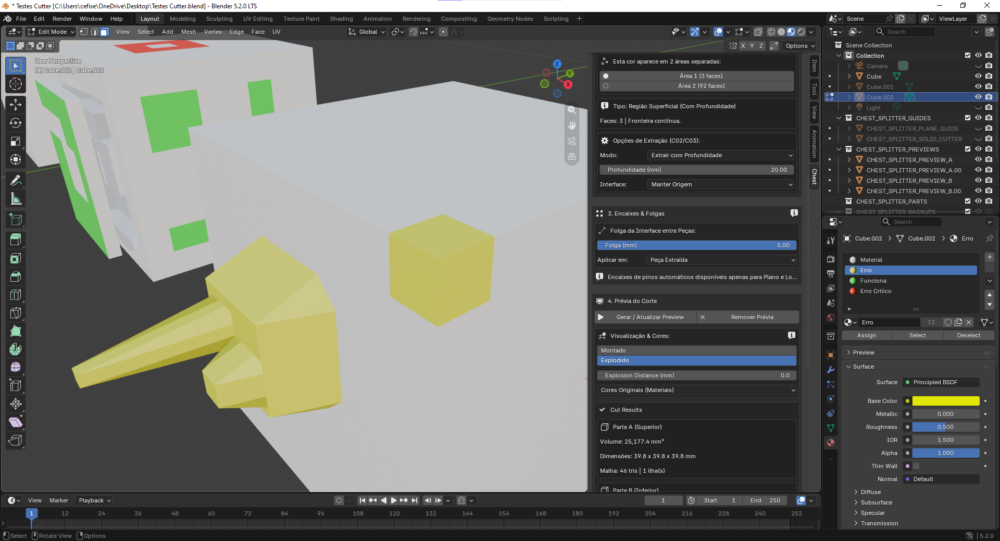
INV-009: quina e volume interno
INV009_05.png
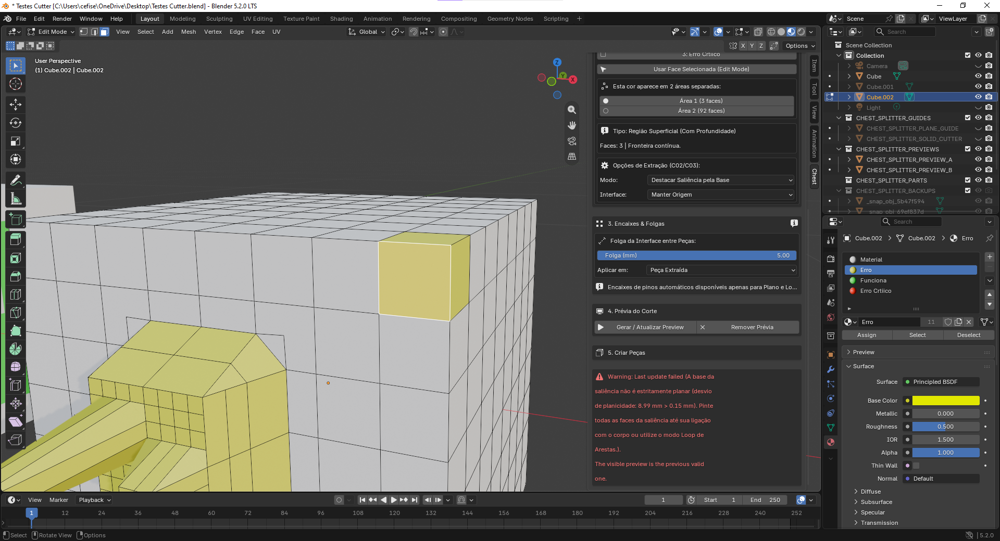
INV-010/011/012: artefatos, fluxo e cavidade
01_manter_origem.png
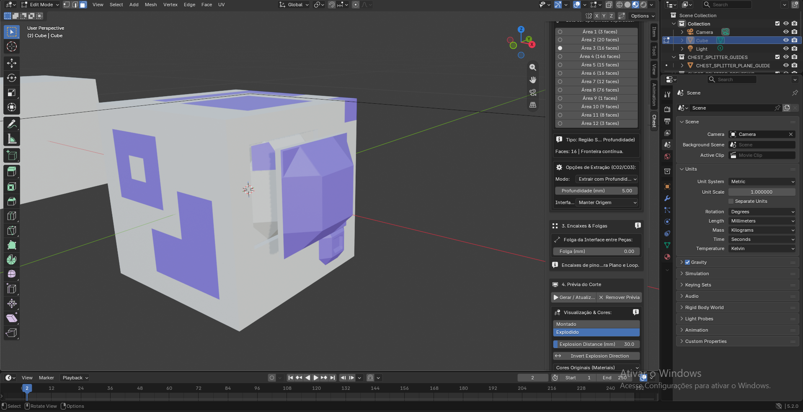
INV-010/011/012: artefatos, fluxo e cavidade
02_material_inserto.png
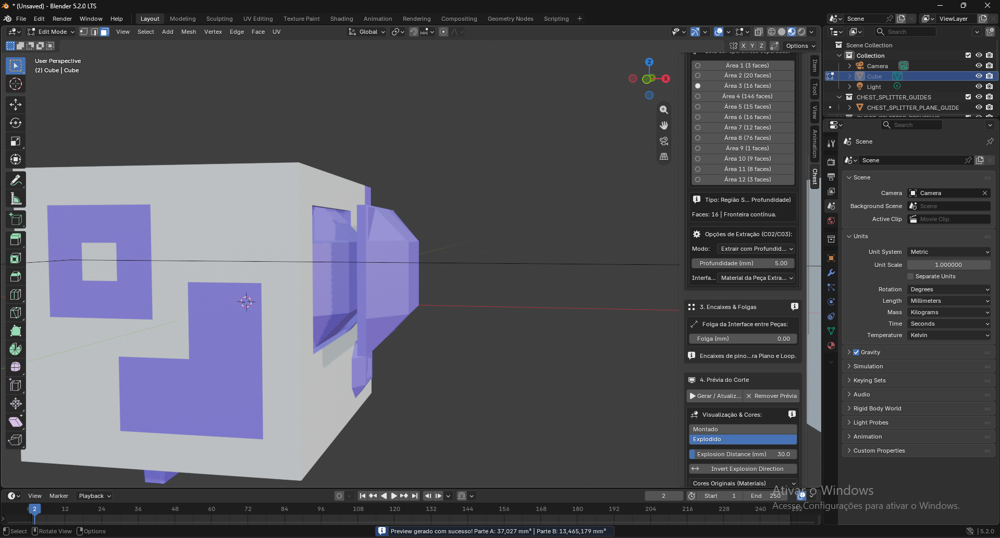
INV-010/011/012: artefatos, fluxo e cavidade
03_selecao_preview.png
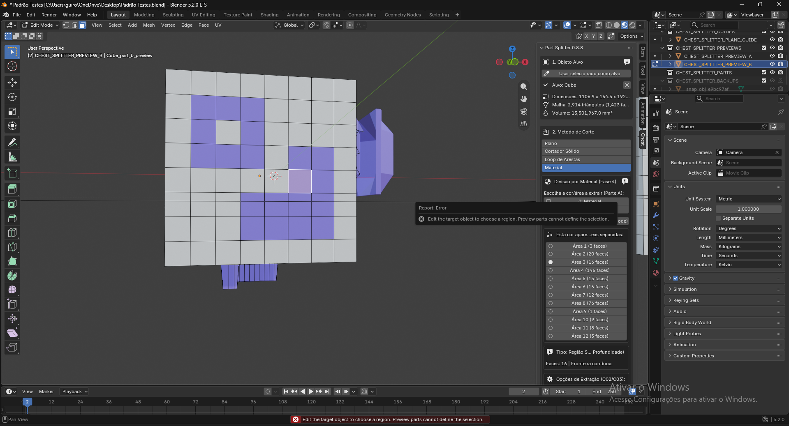
INV-010/011/012: artefatos, fluxo e cavidade
04_cavidade_origem.png
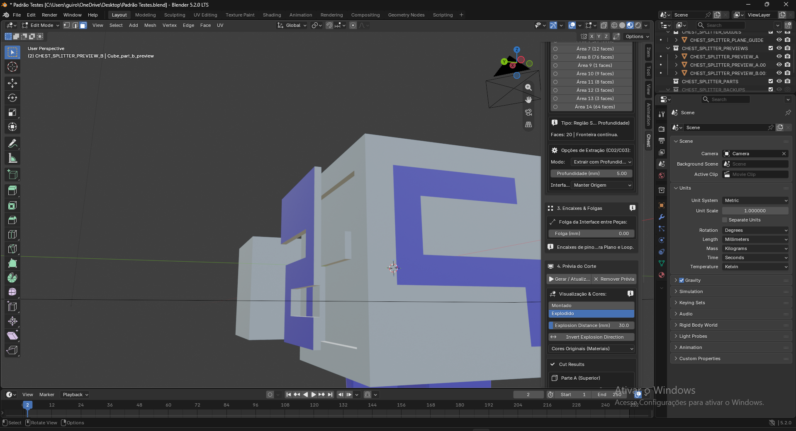
INV-010/011/012: artefatos, fluxo e cavidade
05_cavidade_inserto.png
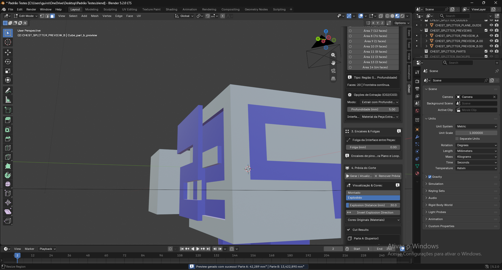
INV-013/014: dois encaixes e loop antigo
01_erro_2encaixes.png
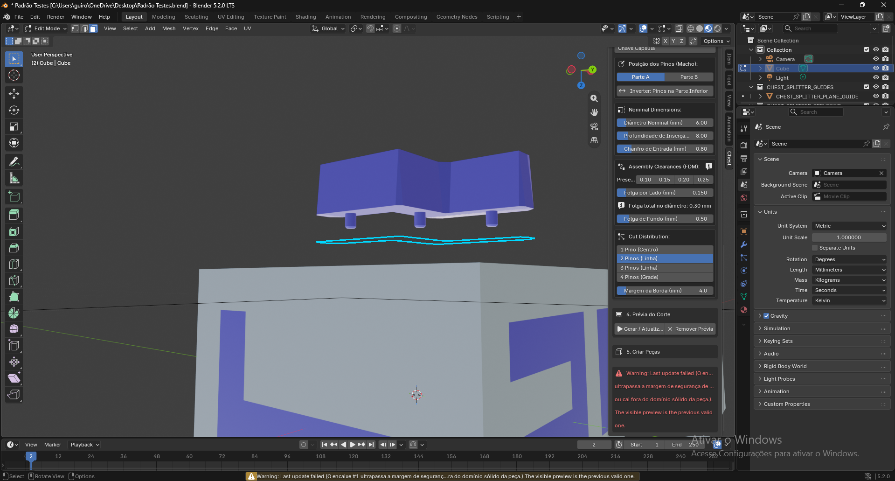
INV-013/014: dois encaixes e loop antigo
02_loop_alvo_novo.png
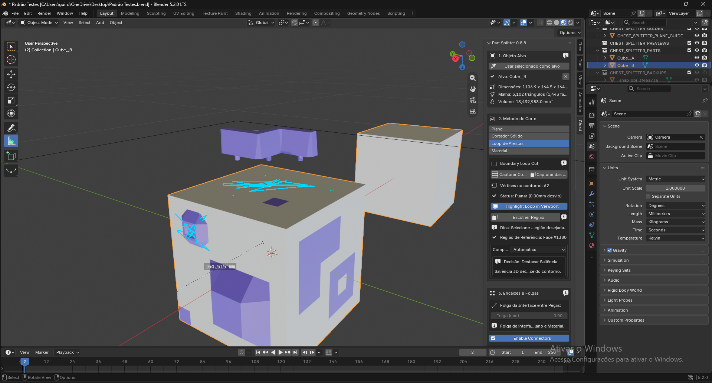
INV-013: faixa côncava e sugestão
01.png
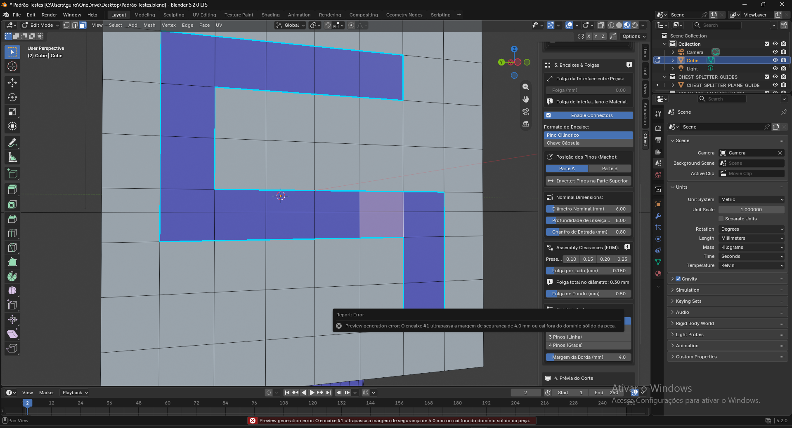
INV-013: faixa côncava e sugestão
02_dois_pinos.png
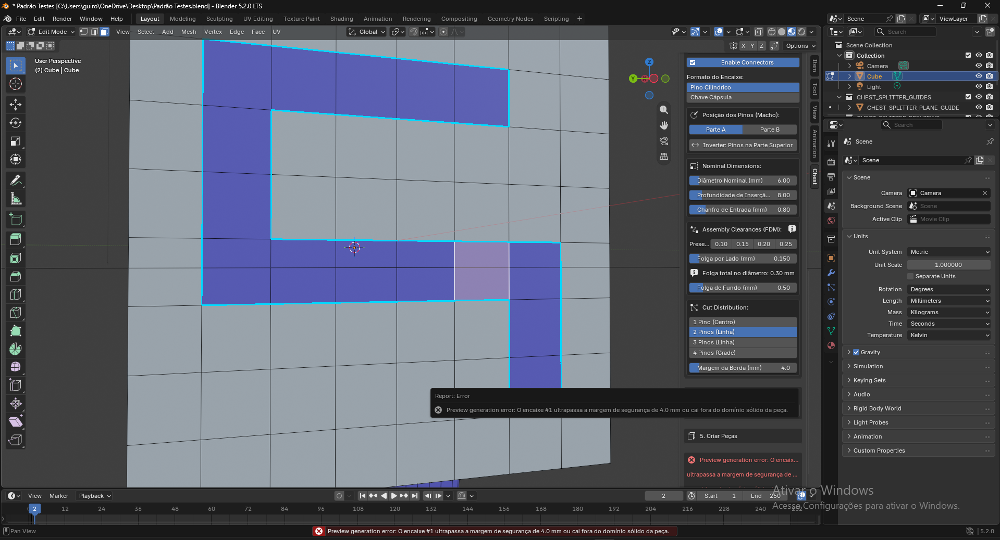
INV-013: faixa côncava e sugestão
03_centro_reduzido.png
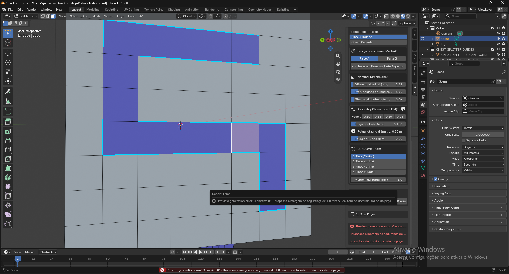